Khi nào cần đăng nhập
Khi muốn tạo đơn mới, xem danh sách đơn, mở chi tiết đơn, kiểm tra COD, theo dõi trạng thái và gửi phản hồi sau giao.
Tài liệu hướng dẫn chi tiết cho khách hàng theo đúng luồng đang dùng: đăng nhập, tạo đơn có COD hoặc nhiều kiện hàng, theo dõi tiến độ, chờ nhân viên giao hàng xử lý và gửi đánh giá sau khi hoàn thành.
Đây là bước giúp hệ thống gắn đơn hàng với đúng tài khoản của bạn để mở danh sách đơn, chi tiết từng đơn và phần đánh giá sau giao.
Khi muốn tạo đơn mới, xem danh sách đơn, mở chi tiết đơn, kiểm tra COD, theo dõi trạng thái và gửi phản hồi sau giao.
Nhấn Đăng nhập trên menu và làm theo hướng dẫn trên màn hình. Sau khi vào thành công, menu sẽ đổi sang trạng thái tài khoản của bạn.
Bạn sẽ mở được khu tổng quan khách hàng, hồ sơ cá nhân, danh sách đơn hàng và chi tiết từng đơn đã tạo.
Bạn vẫn có thể tra cứu nhanh bằng mã đơn, nhưng sẽ không theo dõi được toàn bộ danh sách đơn và các thao tác riêng của tài khoản.
Đây là màn hình chính để nhập thông tin gửi nhận, khai báo hàng hóa, xem phí tạm tính, kiểm tra phương tiện gợi ý và xác nhận tạo đơn.
Họ tên và số điện thoại người gửi, người nhận, địa chỉ lấy hàng, địa chỉ giao hàng và các thông tin cơ bản của từng kiện hàng.
Điền thông tin người gửi, người nhận và xác định đúng điểm lấy, điểm giao trên bản đồ. Hai địa chỉ này không được trùng nhau.
Với mỗi kiện hàng, bạn có thể chọn loại hàng, tên hàng, số lượng, cân nặng, kích thước và giá trị khai báo. Form cho phép thêm nhiều kiện nếu đơn có nhiều món.
Bạn có thể nhập giá trị thu hộ, chọn người trả cước, chọn tiền mặt hoặc chuyển khoản và kiểm tra các khoản phí tạm tính trước khi xác nhận.
Chọn ngày lấy hàng và khung giờ phù hợp. Nếu chọn khung giờ đã trôi qua trong ngày hiện tại, hệ thống sẽ yêu cầu bạn đổi sang khung giờ khác.
Hệ thống sẽ gợi ý phương tiện theo loại hàng, cân nặng, thể tích và khoảng cách. Bạn cũng thấy gói dịch vụ đang được dùng để tính giá.
Nếu cần, bạn có thể đính kèm ảnh hoặc video hàng hóa và để lại ghi chú cho nhân viên giao hàng ở phần xác nhận cuối.
Hệ thống cấp mã đơn riêng, lưu lại chi tiết phí, hàng hóa và cho phép bạn theo dõi hoặc tra cứu đơn về sau.
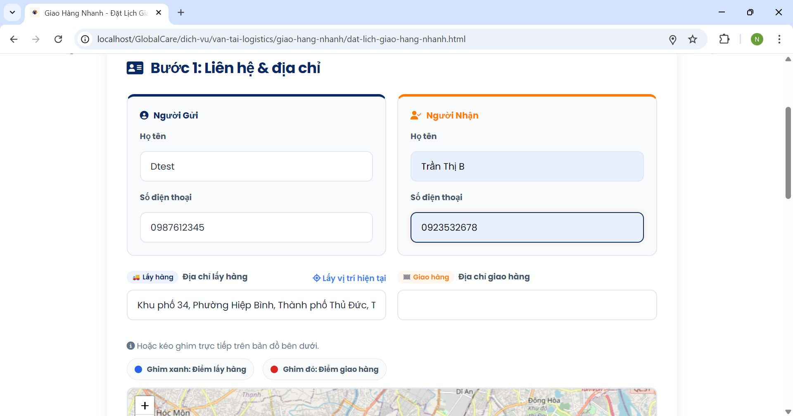
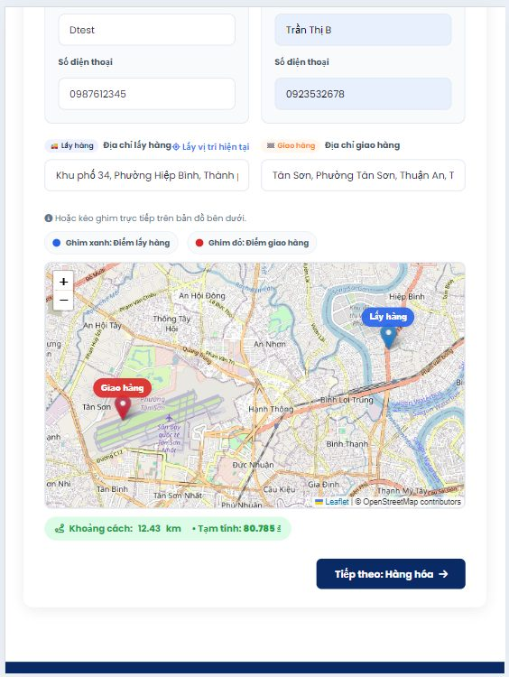
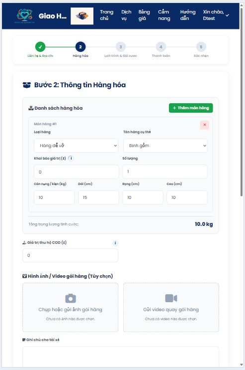
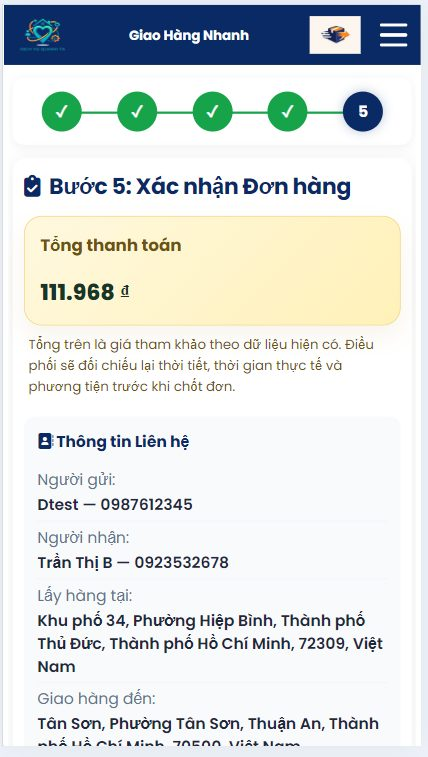
Sau khi đặt thành công, bạn có thể tra cứu nhanh bằng mã đơn hoặc theo dõi đầy đủ trong tài khoản đã đăng nhập.
Lưu ý quan trọng: Khách hàng có thể tự hủy đơn khi đơn chưa được nhân viên giao hàng nhận và nút Hủy đơn vẫn còn hiển thị trong trang chi tiết đơn.
Tra cứu công khai bằng mã đơn hoặc mở danh sách đơn hàng trong tài khoản để theo dõi tất cả các đơn bạn đã tạo.
Mã đơn, trạng thái chính, lộ trình cơ bản, thời điểm cập nhật và các thông tin theo dõi nhanh của đơn hàng.
Bạn sẽ thấy trạng thái, timeline cập nhật, phí vận chuyển, COD, bảo hiểm, phụ phí, người trả cước, thanh toán, người gửi, người nhận, ghi chú và media đính kèm khi tạo đơn.
Khi đơn vẫn còn ở giai đoạn đầu và chưa có nhân viên giao hàng nhận đơn, bạn có thể mở chi tiết đơn và bấm Hủy đơn.
Khi cần kiểm tra nhân viên giao hàng đã nhận đơn hay chưa, đơn đã bắt đầu giao chưa, phí đã lên đúng chưa hoặc đơn đã mở được phần đánh giá chưa.
Phí vận chuyển, phí COD, phí bảo hiểm, phụ phí khung giờ, phụ phí điều kiện giao, điều chỉnh theo xe và trạng thái thanh toán.
Ảnh hoặc video khách gửi khi tạo đơn sẽ nằm trong chi tiết đơn. Sau này phản hồi của khách cũng được lưu lại ngay trên màn hình này.
Chi tiết đơn có phần timeline cập nhật theo thời gian và ghi chú của nhà cung cấp hoặc nhân viên giao hàng khi phát sinh thao tác.
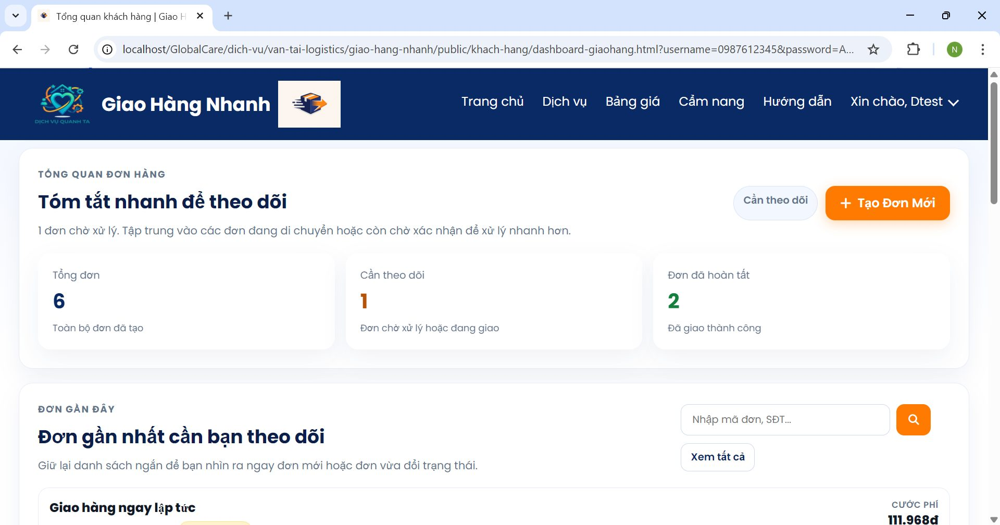
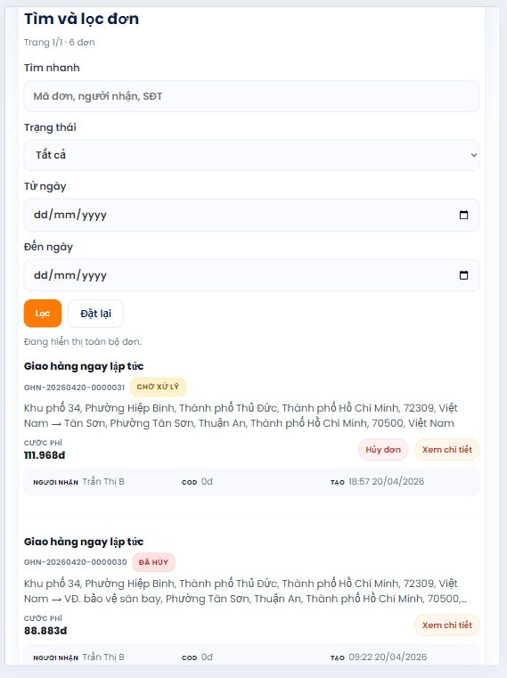
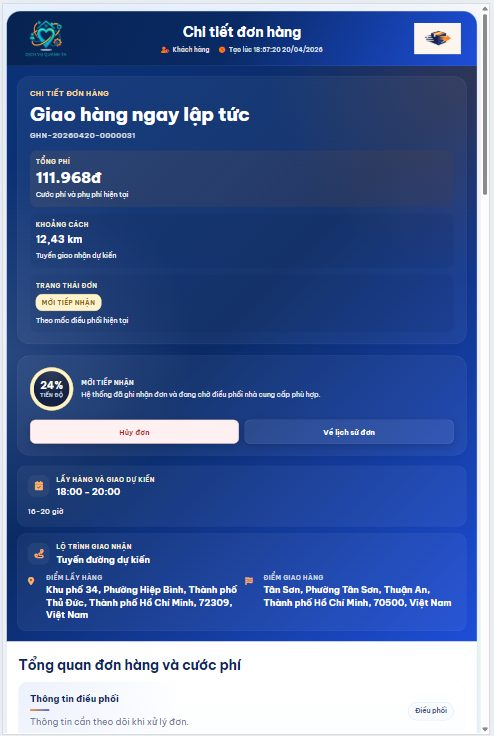
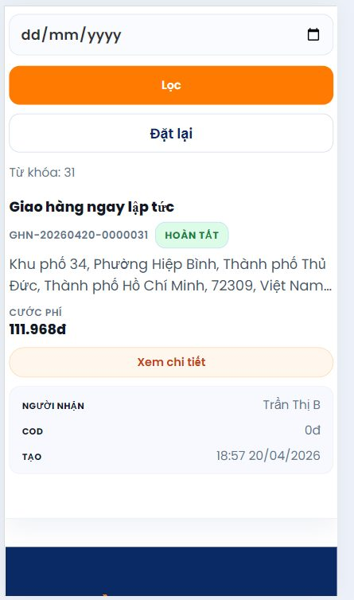
Đây là các mốc quan trọng mà khách hàng sẽ thấy trên timeline và phần trạng thái của chi tiết đơn hàng.
Đơn của bạn thường đi qua các mốc: chưa xử lý, đã nhận đơn, đang giao, hoàn thành hoặc đã hủy.
Nghĩa là nhân viên giao hàng đã tiếp nhận yêu cầu và đang chuẩn bị xử lý đơn hàng của bạn.
Khi nhà cung cấp hoặc nhân viên giao hàng đã xác nhận bắt đầu thực hiện đơn thực tế, trạng thái sẽ lên Đang giao.
Trạng thái này xuất hiện khi đơn bị dừng xử lý. Với khách hàng, việc tự hủy thường chỉ thực hiện được trước khi đơn được nhân viên giao hàng nhận.
Tối thiểu sẽ có mốc tạo đơn, nhận đơn, bắt đầu thực hiện, hoàn thành hoặc hủy đơn. Nếu có thêm log cập nhật, timeline cũng sẽ hiển thị.
Trong lúc xử lý, phía nhà cung cấp có thể để lại ghi chú công việc hoặc gửi thêm ảnh, video minh chứng thực tế trên đơn hàng.
Nếu đơn đứng lâu ở trạng thái đầu, vừa đổi trạng thái hoặc có ghi chú mới, bạn nên mở chi tiết đơn để đọc đầy đủ thông tin.
Luồng xử lý chỉ kết thúc khi đơn được cập nhật Hoàn thành hoặc Đã hủy.
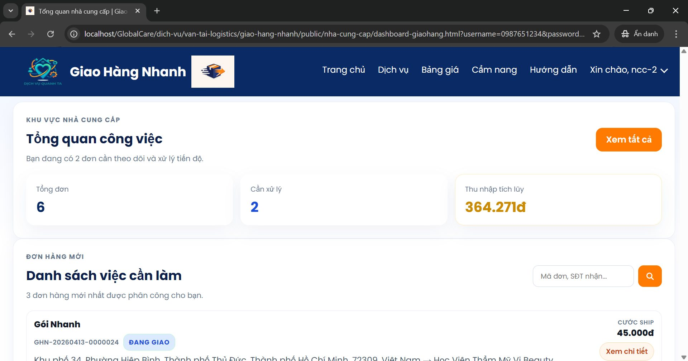
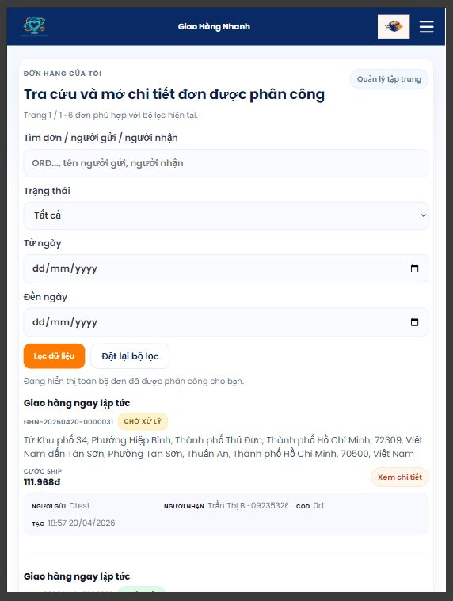
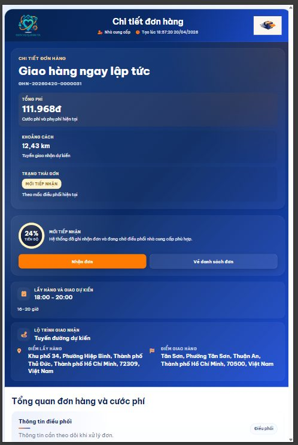
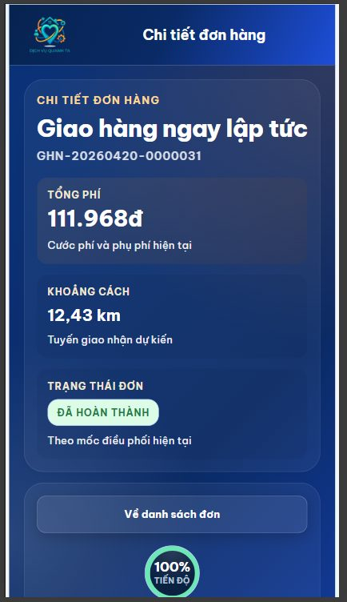
Đây là điểm kết thúc nghiệp vụ giao hàng. Sau khi lên trạng thái này, đơn không còn ở giai đoạn xử lý nữa và khách hàng được mở phần đánh giá.
Trang chi tiết đơn hiển thị trạng thái Hoàn thành và không còn ở giai đoạn xử lý nữa.
Tiền thu hộ, trạng thái thanh toán, timeline cập nhật khi chốt đơn, ghi chú của nhân viên giao hàng và media liên quan trên chi tiết đơn.
Đơn dừng ở trạng thái cuối và hệ thống mở form phản hồi của khách hàng.
Phí vận chuyển, COD, bảo hiểm, phụ phí phát sinh, phương thức thanh toán, người trả cước và các mốc hoàn tất trên timeline.
Đây là bước cuối phía khách hàng. Form phản hồi chỉ mở khi đơn đã ở trạng thái Hoàn thành.
Chỉ khi đơn hàng của bạn đã hiển thị trạng thái Hoàn thành.
Số sao, nội dung phản hồi, ảnh chụp và video nếu cần ghi nhận chất lượng phục vụ hoặc vấn đề phát sinh.
Nên mô tả ngắn gọn nhưng rõ ý: giao đúng hay trễ, hàng hóa có nguyên vẹn không, thái độ phục vụ ra sao và có phát sinh gì không.
Đánh giá cùng ảnh hoặc video phản hồi sẽ được lưu vào chi tiết đơn để bạn và nhân viên giao hàng xem lại khi cần.
Khi cần minh chứng rõ hiện trạng hàng hóa, cách giao nhận hoặc sự cố phát sinh mà chỉ mô tả bằng chữ chưa đủ rõ.
Phản hồi được lưu trong chi tiết đơn để khách hàng và nhà cung cấp cùng xem lại khi cần đối chiếu.
Điều đó có nghĩa là hệ thống chưa ghi nhận đơn ở trạng thái Hoàn thành. Bạn cần chờ cập nhật trạng thái trước.
Giúp bạn lưu lại trải nghiệm sử dụng dịch vụ và phản ánh rõ những điểm làm tốt hoặc vấn đề cần cải thiện cho đơn hàng.